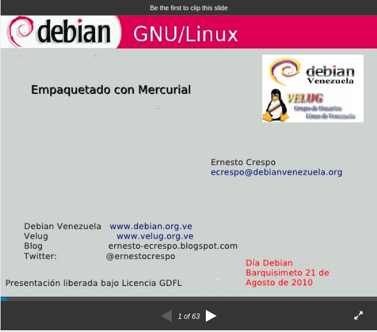

Charla del día Debian en Barquisimeto
Posted on Tue 24 August 2010 in Charla • 1 min read
Ya publique en slideshare la charla que dicte en el día Debian en Barquisimeto. Lo pueden bajar por acá: http://www.slideshare.net/ecrespo/empaquetar-un-paquete-debian-por-medio-de-mercurial

===
¡Haz tu donativo! Si te gustó el artículo puedes realizar un donativo con Bitcoin (BTC) usando la billetera digital de tu preferencia a la siguiente dirección: 17MtNybhdkA9GV3UNS6BTwPcuhjXoPrSzV
O Escaneando el código QR desde billetera: